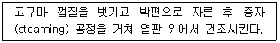
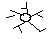
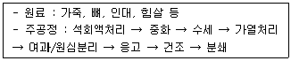
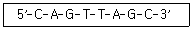

식품기사 (2016-05-08 기출문제)
1과목: 식품위생학
1. GMO 식품의 항생제 내성 유전자가 체내, 혹은 체내 미생물로 전이되는 것이 어려운 이유는?
- 기존 식품에 혼입되어 오랜 시간 동안 다량 노출로 인해 인체가 적응을 하였기 때문
- 유전자변형식품에 인체 및 미생물에 영향을 미치는 유전자가 함유되지 않기 때문
- 식품 중에 포함된 유전자가 체내의 분해효소와 강산 성의 위액에 의해 분해되기 때문
- 안전성평가에 의해 인체에 전이되지 않는 GMO만을 허가하여 유통되기 때문
(정답률: 74%)

2. 식용유지의 연결이 잘못된 것은?
- 콩기름 - 대두유
- 잇꽃유 - 낙화생유
- 채종유 - 유채유 또는 카놀라유
- 목화씨기름 - 면실유
(정답률: 81%)
3. 식품의 총균수 검사를 통하여 알 수 있는 것은?
- 신선도
- 가공 전의 원료 오염상태
- 부패도
- 대장균의 존재
(정답률: 58%)
4. 플라스틱의 감별을 위한 방법으로 이용할 수 있는 물리적인 특성이 아닌 것은?
- 비중
- 경도
- 용해성
- 연소성
(정답률: 53%)
5. 수인성 전염병에 속하지 않는 것은?
- 장티푸스
- 이질
- 콜레라
- 파상풍
(정답률: 81%)
6. 식중독의 역학조사에 대한 설명으로 옳은 것은?
- 검병조사 전에 원인분석을 실시한다.
- 원인식품은 통계적인 방법으로 추정한다.
- 원인물질을 검사하기 위해서는 보존식만 검사 한다.
- 검병조사를 통하여 원인물질 추정이 가능하다.
(정답률: 54%)
7. 식중독 발생 시 취해야 할 조치로 적절하지 않은 것 은?
- 의심되는 모든 식품을 채취하여 역학조사를 실시한 다.
- 환자와 상세하게 인터뷰를 하여 섭취한 음식과 증상 에 대해서 조사한다.
- 식중독균은 항생제에 대한 내성이 없으므로 환자에 게 신속하게 항생제를 투여한다.
- 관련식품의 유통을 금지하여 확산을 방지한다.
(정답률: 90%)
8. 식중독 역학조사 시 설문조사 분석을 통하여 질병의 유형을 분류하고 가설을 설정∙검증하는 단계는?
- 현장조사단계
- 정리단계
- 준비단계
- 조치단계
(정답률: 66%)
9. HACCP에 관한 설명으로 틀린 것은?
- 위해분석(hazard analysis)은 위해가능성이 있는 요 소를 찾아 분석∙평가하는 작업이다.
- 중요관리점(critical control point) 설정이란 관리가 안 될 경우 안전하지 못한 식품이 제조될 가능성이 있는 공정의 결정을 의미한다.
- 관리기준(critical limit)이란 위해분석 시 정확한 위 해도 평가를 위한 지침을 말한다.
- HACCP의 7개 원칙에 따르면 중요관리점이 관리기 준 내에서 관리되고 있는지를 확인하기 위한 모니터 링 방법이 설정되어야 한다.
(정답률: 68%)
10. 불연속 멸균법(간형멸균법)의 설명으로 옳은 것은?
- 100℃에서 3회에 걸쳐 시행하는 것이 보통이다.
- 항온기는 필요하지 않다.
- 고압멸균기가 있어야 실행할 수 있다.
- 포자 형성균에는 적합하지 않다.
(정답률: 72%)
11. BOD가 높아지는 것과 가장 관계가 깊은 것은?
- 식품공장의 세척수
- 매연에 의한 공기오염
- 플라스틱 재생공장의 배기수
- 철강공장의 냉각수
(정답률: 86%)
12. 치즈에 대한 가공기준 및 성분규격으로 틀린 것은?
- 자연치즈는 원유 또는 유가공품에 유산균, 단백질 응유효소, 유기산 등을 가하여 응고시킨 후 유청을 제거하여 제조한 것이다.
- 자연치즈에는 경성치즈, 반경성치즈, 연성치즈, 생치 즈 등이 있다.
- 가공치즈는 모조치즈에 식품첨가물을 가해 유화시켜 가공한 것이나 모조치즈에서 유래한 유고형분이 50% 이상인 것이다.
- 모조치즈는 식용유지와 식물성 단백 또는 이들의 가 공품을 주원료로 하여 이에 식품 또는 식품첨가물을 가하여 유화시켜 제조한 것이다.
(정답률: 80%)
13. 트리할로메탄에 대한 설명으로 틀린 것은?
- 수도용 원수의 염소 처리 시에 생성되며 발암성 물 질로 알려져 있다.
- 생성량은 물속에 있는 총유기성 탄소량에는 반비례 하나 화학적 산소요구량과는 무관하다.
- 메탄의 4개 수소 중 3개가 할로겐 원자로 치환된 것 이다.
- 전구물질을 제거하거나 생성된 것을 활성탄 등으로 처리하여 제거할 수 있다.
(정답률: 83%)
14. LD50 으로 독성을 표현하는 것은?
- 급성독성
- 만성독성
- 발암성
- 변이원성
(정답률: 86%)
15. 다음 중 반감기가 가장 짧으면서도 생성량이 많아서 식품위생상 문제가 되는 방사능은?
- 스트론튬 90
- 세슘 137
- 요오드 131
- 우라늄 238
(정답률: 80%)
16. Sodium L-ascorbate는 주로 어떤 목적에 이용되 는가?
- 살균작용은 약하나 정균작용이 있으므로 보존료로 이용된다.
- 산화방지력이 있으므로 식용유의 산화방지 목적으로 사용된다.
- 수용성이므로 색소의 산화방지에 이용된다.
- 영양 강화의 목적에 적합하다.
(정답률: 56%)
17. 경구전염병의 특성에 대한 설명으로 틀린 것은?
- 경구전염병은 병원성 미생물이 음식물, 손, 기구 등 에 의해 입을 통하여 체내 침입∙증식하여 주로 소 화기계통에 질병을 일으켜 소화기계 전염병이라고도 한다.
- 경구전염병은 전염원, 전염경로, 감수성숙주가 있어 야 하나, 일반 식중독은 종말감염이다.
- 세균성이질은 여름철에 어린이들이 많이 걸리는 경 구전염병으로 병원체는 Salmonella typhi, Salmonella pratyphi 이다.
- 대표적인 수인성 전염병으로는 콜레라가 있으며 병 원체는 Vibrio cholerae이다.
(정답률: 74%)
18. 사람의 1일 섭취허용량(ADI)를 계산하는일반적인 식은?
- ADI= MNFL x 1/100 x 국민의 평균체중
- ADI= MNFL x 1/10 x 성인남자 평균체중
- ADI= MNFL x 1/10 x 국민의 평균체중
- ADI= MNFL x 1/100 x 성인남자 평균체중
(정답률: 84%)
19. 알레르기(allergy) 식중독의 원인 물질은?
- arginine
- histamine
- alanine
- lysine
(정답률: 89%)
20. 동물성 식품의 부패로 생성되는 것과 거리가 먼 것 은?
- 암모니아
- 아민
- 저급 지방산
- 스카톨
(정답률: 54%)
2과목: 식품화학
21. 아래의 고구마 가공 공정에서 박편으로 자른 후 갈 변현상이 나타났을 때 그 원인은?

- 마이야르반응에 의한 갈변
- 캐러맬화에 의한 갈변
- 효소에 의한 갈변
- 아스코르브산 산화반응에 의한 갈변
(정답률: 78%)
22. 식품과 그 식품이 함유하고 있는 단백질이 서로 잘못 연걸된 것은?
- 소맥 - 프롤라민
- 난맥 - 알부민
- 우유 - 글루테린
- 옥수수 - 제인
(정답률: 77%)
23. 안토시아닌(anthocyanin)계 색소가 적색을 띠는 경 우는?
- 산성에서
- 중성에서
- 알칼리성에서
- pH에 관계없이 항상
(정답률: 77%)
24. 다음 중 열변성이 일어날 때 수용성이 증가되는 대 표적인 단백질은?
- 알부민
- 글로불린
- 글루텐
- 콜라겐
(정답률: 62%)
25. 수분 함량(분자량 18) 60%, 소금 함량(분자량 58.45) 15.5%, 설탕함량(분자량342) 4.5%, 비타민A(분자량 286.46) 200mg% 함유된 식품의 수분활성도는?
- 약 0.94
- 약 0.92
- 약 0.90
- 약 0.88
(정답률: 55%)
26. 효소에 의한 식품의 변색현상은?
- 김이 저장 중 고유한 색깔을 잃는 것
- 새우나 게를 가열하면 붉은 색으로 변하는 것
- 사과를 잘라 공기 중에 두었을 대 갈변하는 것
- 안토시아닌을 가진 채소나 과일을 통조림에 담으면 회색을 나타내는 것
(정답률: 79%)
27. 지방산화 중 발생하는 휘발성분에 대한 설명으로 틀린 것은?
- 오메가-6 지방산인 리놀레산으로부터 유래된 전형적 인 휘발성분은 hexanal이다.
- 유지의 자동산화과정 중 휘발성분은 hydroperoxide 생성 전 단계에서 생성된다.
- prophanal은 오메가-3 지방산인 리놀렌산으로부터 유래된 산화휘발성분이다.
- hexanal 함량 비교를 통해 산화정도를 측정할 수 있다.
(정답률: 54%)
28. 탄수화물 다당류에 대한 설명으로 옳은 것은?
- 키틴은 갑각류의 껍질에서 발견되는 다당류로 키토 산 제조에 사용된다.
- 이눌린은 갈락토오스의 주요공급처이다.
- 셀룰로오스는 α-글루코오스의 결합체이다.
- β-글루칸은 α-글루코오스의 결합체로 버섯 등에서 발견된다.
(정답률: 76%)
29. 소비자의 선호도를 평가하는 방법으로써 새로운 제 품의 개발과 개선을 위해 주로 이용되는 관능 검사법 은?
- 묘사 분석
- 특성차이 검사
- 기호도 검사
- 차이식별 검사
(정답률: 87%)
30. 콜로이드(colloid)의 설명으로 옳은 것은?
- sol 상태는 소량의 분산상 입자들 사이에 다량의 분 산매가 있어 유동성이 있는 것이다.
- gel 상태는 소량의 분산상 입자들 사이에 다량의 분 산매가 있어 유동성이 있는 것이다.
- gel 입자가 응집하여 침전된 것이 sol이다.
- gel이 건조 상태가 된 것을 xerogel이다.
(정답률: 50%)
31. TBA시험은 무엇을 측정하고자 하는 것인가?
- 필수지방산의 함량
- 지방의 함량
- 유지의 불포화도
- 유지의 산패도
(정답률: 73%)
32. 가당연유 속에 젓가락을 세워서 회전시키면 연유가 젓가락을 타고 올라간다. 이와 같은 현상을 무엇이 라 하는가?
- 예사성
- Tyndall 현상
- Weissenberg 효과
- Brown 운동
(정답률: 68%)
33. 검화될 수 없는 지방질에 속하는 것은?
- 트리스테아린
- 토코페롤
- 세레브로사이드
- 레시틴
(정답률: 57%)
34. 포도당이 아글리콘(aglycone)과 에테르 결합을 한 화합물의 명칭은?
- glucoside
- clycoside
- galactoside
- riboside
(정답률: 72%)
35. 감자전분용액을 가열하였더니 더 이상 저을 수 없 을 정도로 부풀어 올랐다. 이러한 유체의 상태는?
- 가소성
- 의사가소성
- 틸라탄트
- 의액성
(정답률: 66%)
36. β-fructofuranose가 주성분인 다당류는?
- 한천
- 알긴산
- 이눌린
- 글리코겐
(정답률: 69%)
37. 상어의 간유속에 들어있는 탄화수소인 스쿠알렌은 그 구조 중에 아이소프렌 단위가 몇 개 들어있는가?
- 14개
- 10개
- 6개
- 2개
(정답률: 62%)
38. 식품에 사용되는 효소에 대한 설명 중 틀린 것은?
- invertase는 이당인 lactose를 구성단당으로 분해하 는 효소이다.
- glucoamylase는 녹말의 비환원성 말단에서 포도당 단위로 절단하는 효소이다.
- 유당불내증을 억제 가능한 효소는 β-galactosidase 이다.
- 팩틴 분해효소는 과일주스나 포도주를 맑게 하고 과일펄프의 마쇄를 촉진시키는 역할을 한다.
(정답률: 60%)
39. 카로티노이드계 색소는 어느것인가?
- 크산토필
- 클로로필
- 탄닌
- 안토시아닌
(정답률: 55%)
40. 식품의 텍스쳐를 측정하는 texturometer에 의한 texure profile로부터 알 수 없는 특성은?
- 탄성
- 저작성
- 부착성
- 안정성
(정답률: 81%)
3과목: 식품가공학
41. 주용도가 두부응고제가 아닌 것은?
- 글루코노-δ-락톤
- 알루미늄인산나트륨
- 황산마그네슘
- 조제해수염화마그네슘
(정답률: 69%)
42. 밀가루의 품질시험방법이 잘못 짝지어진 것은?
- 색도 - 밀기울의 혼입도
- 입도 - 체눈 크기와 사별정도
- 패리노그래프 - 점탄성
- 아미로그래프 - 인장항력
(정답률: 71%)
43. 무당연유의 제조공정에 대한 설명으로 틀린 것은?
- 당을 넣지 않는다.
- 예열공정을 하지 않는다.
- 균질화를 한다.
- 가열멸균을 한다.
(정답률: 79%)
44. 병조림의 파손형태에 대한 그림 중 내부 충격에 의 해 파손된 형태는?

(정답률: 77%)
45. 유지를 정제한 다음 정제유에 수소를 첨가하면 유 지는 어떻게 변하는가?
- 융점이 저하된다.
- 융점이 상승한다.
- 성상이나 융점은 변하지 않는다.
- 이중 결합에 변화가 없다.
(정답률: 75%)
46. 다음 중 고융점 glyceride 함량이 가장 높은 기름은?
- 대두유
- 면실유
- 옥배유
- 미강유
(정답률: 47%)
47. 압출 가공공정이 식품에 미치는 영향에 대한 설명으로 틀린 것은?
- 마이야르 갈색화반응이 발생하면 단백질의 품질이 저하될 수 있다.
- 식품의 색과 향기가 현저히 저하되므로 적용 가능한 식품의 종류가 한정적이다.
- 향의 기화를 방지하기 위해 향료를 제품 표면에 에 멀젼 또는 점성현탄액의 형태로 코팅한다.
- cold extrusion의 경우 비타민 손실이 적다.
(정답률: 54%)
48. 건강기능식품의 기능성 등급분류에서 질병발생위험 감소 기능으로 인정되는 질병과 성분의 연결이 옳은 것은?
- 항산화에 도움을 줄 수 있으나 관련 인체적용시험이 미흡함 - 비타민 E, 비타민 C
- 골다공증 발생 위험 감소에 도움을 줌(질병발생위험 감소기능) - 칼슘, 비타민 D
- 전립선 건강에 도움을 줌 - 셀레늄, 아연
- 콜레스테롤 개선에 도움을 줄 수 있음 - 리놀레산, 리놀렌산
(정답률: 70%)
49. 과일주스 (비열 3.92 kJ/Kg∙K)를 0.5kg/s의 속도로 이중관 열교환기에 투입하여 20℃에서 55℃로 가열한다. 이 때 가열매체로는 90℃의 열수(비열 4.18 kJ/kg∙K)를 유속 1kg/s로 투입하며 향류방식으로 조업한다. 정상상태조건으로 가정한다고 할 때 열수의 출구온도는 약 몇 도인가?
- 36.8℃
- 45.6℃
- 68.9℃
- 73.6℃
(정답률: 35%)
50. 튀김유의 품질 조건이 아닌 것은?
- 거품이 일지 않을 것
- 열에 대하여 안전할 것
- 튀길 때 발생하는 연기가 적을 것
- 가열에 대한 점도 변화가 클 것
(정답률: 84%)
51. 다음은 어떤 가공 제품에 대한 설명인가?

- 라드
- 건조육
- 젤라틴
- 골분
(정답률: 65%)
52. 국제단위계(SI system)에서 힘의 단위는?
- dyne
- Ib(pound force)
- kg(kg force)
- N(Newton)
(정답률: 80%)
53. 마요네즈에 대한 설명으로 틀린 것은?
- 마요네즈는 유백색이며, 기포가 없고, 내용물이 균질 하여야 한다.
- 식용유의 입자가 큰 것일수록 점도가 높고 안정도도 크다.
- 유탁의 조직 점도와 함께 조미료와 향신료의 배합에 의한 풍미는 마요네즈의 품질을 좌우한다.
- 마요네즈는 oil in water(O/W)의 유탁액이다.
(정답률: 71%)
54. 냉동고의 크기가 가로 3m, 세로 5m, 높이가 2m이고 냉동고벽의 총괄 전열계수가 0.25 kcal/m2∙h∙℃일 때 벽면을 통과하는 열손실은? (단, 전체 전열면적 중 지면에 접하고 있는 부분도 공기중에 노출된 것으로 간주하고 계산하며 이 냉동고의 온도는 -20℃이고 공기의 온도는 25℃이다.)
- 34.72 kcal/h
- 372.5 kcal/h
- 566.3 kcal/h
- 697.5 kcal/h
(정답률: 33%)
55. 식품 저장 시 방사선 조사에 의한 효과가 아닌 것은?
- 곡류 식품의 살충
- 과실, 채소, 육류 식품의 살균
- 감자, 양파 등의 발아 촉진
- 과실, 채소 등의 숙도 조절
(정답률: 78%)
56. 간장을 달이는 주요 목적이 아닌 것은?
- 탈색
- 저장성 부여
- 미생물의 살균
- 효소의 파괴
(정답률: 72%)
57. 과실 또는 채소류의 가공에서 열처리 목적이 아닌 것은?
- 산화효소를 파괴하여 가공 중에 일어나는 변색과 변 질 방지
- 원료 중 특수성분이 용출되도록 하여 외관, 맛의 변 화 및 부피 증가 유도
- 원료 조직을 부드럽게 변화
- 미생물의 번식 억제 유도
(정답률: 73%)
58. 달걀의 성분에 대한 설명으로 옳은 것은?
- 달걀의 난황단백질은 지방, 인 등과 결합된 구조로 되어 있다.
- 다른 동물성 식품과는 달리 탄수화물의 함량이 높 다.
- 달걀의 무기질은 알 껍질 보다는 난황에 많이 함유 되어 있다.
- 달걀은 비타민 A, B1, B2, C, D, E를 많이 함유하 고 있으며, 대부분 난백에 함유되어 있다.
(정답률: 68%)
59. 경화유 제조에 사용되는 수소 첨가용 촉매는?
- Cu
- Ni
- Mg
- Fe
(정답률: 81%)
60. 균질의 주목적이 아닌 것은?
- 우유 중의 지방구의 분리를 방지한다.
- 우유 중의 지방구의 크기를 작게 분쇄한다.
- 소화가 잘 된다.
- 살균을 용이하게 한다.
(정답률: 65%)
4과목: 식품미생물학
61. 다음 중 가장 광범위하게 거의 모든 미생물에 대하여 비선택적으로 유사한 정도의 향균작용을 가지는 것은?
- sorbic acid
- propionic acid
- dehydroacetic acid
- benzonic acid
(정답률: 61%)
62. 변이는 일으키지 않고 미생물을 보존하는 방법은?
- 토양보존법
- 동결건조법
- 유중보존법
- 모래보존법
(정답률: 80%)
63. 단시간 내에 특정 DNA 부위를 기하급수적으로 증폭시키는 중합효소연쇄반응(PCR)의 반복되는 단계는?
- DNA 이중나선의 변성 ⟶ RNA 합성 ⟶ DNA 합성
- RNA 합성 ⟶ DNA 이중나선의 변성 ⟶ DNA합성
- DNA 이중나선의 변성 ⟶ 프라이머 결합 ⟶ DNA 합성
- 프라이머 결합 ⟶ DNA 이중나선의 변성 ⟶ DNA 합성
(정답률: 70%)
64. 박테리오파지에 대한 설명 중 틀린 것은?
- 세균을 감염하는 바이러스의 한 종류이다.
- DNA 혹은 RNA가 박테리오파지 유전물질을 구성한 다.
- 숙주 세균에 대한 감염 특이성이 존재한다.
- 용원성(lysogenic) 파지는 세균을 파괴하거나 용해하 는 것을 특징으로 한다.
(정답률: 64%)
65. 미생물의 표면 구조물 중에서 이동에 관여하는 것은?
- 편모
- 섬모
- 필리
- 핌브리아
(정답률: 70%)
66. Photoautotroph가 탄소원으로 이용하는 것은?
- C2H5OH5
- C6H12O6
- CO2
- CH4
(정답률: 74%)
67. 다음 물질 중 변이유기체가 아닌 것은?
- H2S
- HNO2
- X 선
- nitrosoguanidine
(정답률: 48%)
68. Mucor속 중 cymomucor형에 해당하는 것은?
- Mucor rouxii
- Mucor mucedo
- Mucor huernalis
- Mucor racemosus
(정답률: 65%)
69. 느타리 버섯을 재배할 때 일반적으로 사용하지 않는 배지 원료는?
- 흙
- 미루나무
- 톱밥
- 볏짚
(정답률: 59%)
70. Pichia 속의 특징이 아닌 것은?
- 산소를 요구한다.
- 액의 내부에서 생육한다.
- 산화력이 강하다.
- 산막효모이다.
(정답률: 77%)
71. 그램양성균의 세포벽 성분은?
- peptidoglycan, teichoic acid
- lipopolysaccharide, protein
- polyphosphate, calcium dipicholinate
- lipoprotein, phospholipid
(정답률: 80%)
72. 조류(algae)에 대한 설명으로 틀린 것은?
- 대부분 수중에서 생활한다.
- 남조류, 녹조류는 육안으로 볼 수 있는 다세포형이 다.
- 남조류, 규조류, 갈조류, 홍조류 등이 있다.
- 조류는 세포 내에 엽록체나 엽록소를 갖는다.
(정답률: 77%)
73. 불완전균류에 대한 설명으로 옳은 것은?
- 유성생식시대가 불명한 균이다.
- 형태가 완전하지 못한 균류이다.
- 포자를 형성하지 않는 균들이다.
- 변이를 일으킨 균들이다.
(정답률: 60%)
74. 다음 중 공기 중의 질소를 고정할 수 있는 미생물 이 아닌 것은?
- Achromobacter sp.
- Aerobacter aerogenes
- Acetobacter aceti
- Azotobacter uinelandii
(정답률: 58%)
75. 자외선이 살균효과를 갖는 주된 이유는?
- 단백질 변성 초래
- RNA변이를 일으킨다.
- DNA변이를 일으킨다.
- 세포내 ATP를 고갈시킨다.
(정답률: 65%)
76. 청주, 장류 등의 양조에 쓰이며 황록색이나 황갈색의 균총을 형성하는 균은?
- Mucor pusillus
- Aspergillus oryzae
- Monascus anka
- Rhizopus delemar
(정답률: 82%)
77. Glucose Saccharomyces cerevisiae를 접종하여 호기적으로 배양하였을 경우의 결과물은?
- 6CO2 + 6H2O
- CH3CH2OH
- CO2
- 2CH3CH2OH + 2CO2
(정답률: 60%)
78. 공여세포로부터 유리된 DNA가 바이러스를 매개로 수용세포 내로 들어가 일어나는 DNA 재조합 방법은?
- 형질전환(transformation)
- 형질도입(transduction)
- 결합(conjugation)
- 세포융합(cell fusion)
(정답률: 60%)
79. 유전자 재조합 기술에서 벡터로 사용될 수 있는 것 은?
- 용원성 파아지
- 용균성 파아지
- 탐침
- 프라이머
(정답률: 53%)
80. Catalase와 enterotoxin을 생성하며 coaulase양성 반응을 특징으로 하는 식중독균은?
- Listeria monocytogenes
- Salmonella spp.
- Vibrio parahaemolyticus
- Staphylococcus aureus
(정답률: 67%)
5과목: 생화학 및 발효학
81. 핵산의 소화에 대한 설명으로 틀린 것은?
- 췌액 중의 nuclease에 의해 분해되어 mononucleotide가 생성된다.
- 위액 중의 DNAase에 의해 인산과 nucleoside로 분해된다.
- nucleosidase는 글리코시드 결합을 가수분해한다.
- pentose는 다시 인산과 결합하여 pentose phosphate로 전환된다.
(정답률: 50%)
82. 효소의 작용에 의한 분류 중 lyase의 설명으로 옳은 것은?
- 이중결합을 형성하는 과정에서 작용기의 제거를 촉 매
- 결합사이에 물분자의 첨가를 촉매
- ATP 분해를 수반하는 화학결합의 생성반응을 촉매
- 관능기의 전이를 촉매
(정답률: 55%)
83. 대사산물 제어 조절계(feedback control)에 관한 설명으로 틀린 것은?
- 합동피드백제어(concerted feedback control)는 과 잉으로 생산된 1개 이상의 최종산물이 대사계의 첫 단계 반응의 효소를 제어하는 경우를 말한다.
- 협동피드백제어(cooperative feedback)는 과잉으로 생산된 다수의 최종산물이 합동제어에서와 마찬가지 로 협동적으로 첫 단계 반응의 효소를 제어함과 동 시에 각각의 최종상물 사이에도 약한 제어반응이 존 재하는 경우를 말한다.
- 순차적피드백제어(sequential feedback control)는 그 계에 존재하는 모든 대사기구의 갈림반응이 그 계의 뒤쪽의 생산물에 의해 제어되는 경우를 말한 다.
- 동위효소제어(isozyme control)는 각각의 최종산물 이 서로 관계없이 독립적으로 그 생합성계의 첫 번째 반응의 어떤 백분율로 제어하는 경우이다.
(정답률: 71%)
84. 발효산업에서 고체배양의 일반적인 장점이 아닌 것은?
- 값싼 원료를 이용할 수 있다.
- 생산물의 회수가 쉽다.
- 산소공급이 쉽다.
- 환경조건의 측정 및 제어가 쉽다.
(정답률: 57%)
85. 알코올 증류에서 공비점(K점)에 대한 설명으로 틀린 것은?
- 알코올 농도는 97.2%이다.
- 99% 알코올을 비등 냉각하면 알코올 농도는 더욱 높아진다.
- 97.2%의 알코올 용액을 비등 냉각해도 알코올 농도 는 불변이다.
- 공비점의 혼합물을 공비혼합물이라 한다.
(정답률: 63%)
86. 핵단백질의 가수분해 순서는?
- 핵산⟶nucleotide ⟶nucleoside ⟶base
- 핵산⟶ nucleoside⟶ nucleotide⟶base
- 핵산⟶ nucleotide⟶ base⟶nucleoside
- 핵산⟶ base⟶ nucleoside⟶nucleotide
(정답률: 73%)
87. 지방산의 생합성 속도를 결정하는 효소는?
- 시트르산 분해효소
- 아세틸-coA 카르복실화효소
- ACP-아세틸기 전이효소
- ACP-말로닐기 전이효소
(정답률: 77%)
88. 맥주의 종류 중 라거(lager)류에 대한 설명으로 틀린 것은?
- 독일, 미국, 일본, 우리나라 등에서 주로 생산되고 있다.
- 발효온도가 낮다.
- 저온, 장기 저장공정을 특징으로 한다.
- Saccharomyses cerevisiae를 사용한다.
(정답률: 66%)
89. 혐기적 분해의 2단계는?
- 소화발효 (→) 가스발효
- 가스발효 (→) 소화발효
- 흡착 (→) 소화발효
- 가스발효 (→) 활성오니법
(정답률: 61%)
90. 케톤체에 대한 설명으로 옳은 것은?
- 간은 케톤체 분해 기능이 강하다.
- 케톤체는 근육에서 생성되어 간에서 산화된다.
- 과잉의 탄수화물은 케톤체로 전환되어 축적된다.
- 케톤체는 간에서 생성되어 뇌와 심장, 뼈대근유그 콩팥 등의 말초조직에서 산화된다.
(정답률: 65%)
91. 에너지 획득에 관한 중요한 반응에 관여하는 효소 계가 함유되어 있으며 내외 두 장의 단위막으로 구 성된 세포 내 소기관은?
- 리보솜
- 소포체
- 미토콘드리아
- 핵
(정답률: 74%)
92. 효소생산에서 효소와 생산미생물이 잘못 짝지어진 것은?
- α-amylase : Asperlillus oryzae
- α-amylase : Bacillus amyloliquefaciens
- alkaline protease : Bacillus amyloliquefaciens
- alkaline protease : Alcaligenes faecails
(정답률: 41%)
93. 정미성 핵산 관련 물질이 정미성을 갖기 위한 구조에 대한 설명으로 옳은 것은?
- 정미성 nucleotide는 ribose의 3ʹ위치에 인산기를 가져야 한다.
- 정미성을 가지려면 염기 ring 구조의 2ʹ위치가 OH 로 치환되어야 한다.
- 정미성 nucleotide는 염기가 pyrimidine계 이어야 한다.
- 핵산 관련 물질 중 인산기를 1개 가진 nucleotide가 정미성이 우수하다.
(정답률: 44%)
94. 이중나선 DNA의 이차 구조가 아닌 것은?
- B-DNA
- A-DNA
- C-DNA
- Z-DNA
(정답률: 52%)
95. 설탕용액에서 생장할 때 dextran을 생산하는 균주 는?
- Leuconostoc mesenteroides
- Aspergillus oryzae
- Lactobacillus delbrueckii
- Rhizopus oryzae
(정답률: 63%)
96. 단백질 자원으로서 미생물균체의 단점으로 작용하 는 특징은?
- 단백질의 함량이 높다.
- 필수 아미노산을 골고루 함유하고 있다.
- 지질의 함량이 높다.
- 핵산의 함량이 높다.
(정답률: 51%)
97. fusel oil의 고급 알코올은 무엇으로부터 생성되는 가?
- 포도당
- 에틸 알코올
- 아미노산
- 지방
(정답률: 40%)
98. DNA 단편구조의 염기배열이 아래와 같다면 상보적 인(complementary) 염기배열은?

- 5ʹ-G-T-C-A-A-T-C-G-3ʹ
- 5ʹ-G-C-T-A-A-C-T-G-3ʹ
- 5ʹ-C-G-A-T-T-G-A-C-3ʹ
- 5ʹ-T-A-G-C-C-A-G-T-3ʹ
(정답률: 64%)
99. 리보솜에서 단백질이 합성될 때 아미노산이 atp에 의하여 일단 활성화된 후에 한 종류의 핵산에 특이적으로 결합된다. 이 활성화된 아미노산이 결합되는 핵산 수용체는?
- m-RNA
- r-RNA
- t-RNA
- DNA
(정답률: 57%)
100. A에서 B로 전환하는 속도가 100이고 B에서 A로 전환하는 속도가 90이다. 어떠한 ligand가 A에서 B의 반응을 20% 증가시키고 상반적으로 B에서 A의 반응을 20%감소시켰을 경우 알짜흐름은 몇 % 증가하였는가?
- 180%
- 280%
- 380%
- 480%
(정답률: 38%)